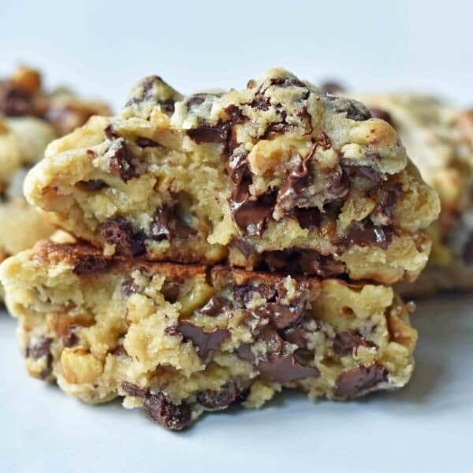

The BEST Levain Bakery Chocolate Chip Copycat Cookie Recipe.

Now, these aren’t some ordinary bite-size cookies. No these are a full-on meal. Well maybe for some people. Here’s the deal – you make them big. Really big. Like only four can fit on a cookie sheet, BIG. These are the BEST CHOCOLATE CHIP COOKIES EVER. Yep, I said it.
You may want to eat these Levain Bakery Chocolate Chip Cookies the second they come out of the oven, but patience is a virtue and you must exercise some with these cookies. They need to “set up” so give them at least 10-15 minutes before you devour them. The amazing part of these cookies is that they are the only cookies I have ever made that are still cookie perfection even after a few days.
Ingredients
- 1 cup Cold Butter cut into small cubes
- 1 cup Brown Sugar
- 1/2 cup Sugar
- 2 Eggs
- 1 1/2 cups Cake Flour*
- 1 1/2 cups Flour
- 1 teaspoon Cornstarch
- 3/4 teaspoon Baking Soda
- 3/4 teaspoon Salt
- 2 cups Chocolate Chips
- *Optional* 2 cups Walnuts roughly chopped
Steps
- Preheat oven to 410 degrees.
- In a large mixing bowl, cream together cold cubed butter, brown sugar, and sugar for 4 minutes or until creamy.
- Add eggs, one at a time, mixing well after each one.
- Stir in flours, cornstarch, baking soda, and salt. Mix until just combined to avoid overmixing. Stir in chocolate chips and walnuts.
- Separate dough into large balls and place on lightly colored cookie sheet. They are bigger than you think! You will fit 4 cookies on one large cookie sheet. The dough makes 8 extra large cookies.
- Bake for 9-12 minutes or until golden brown on the top. Let them rest for at least 10 minutes to set.
Notes
- Can substitute all-purpose flour for cake flour
- Levain Bakery has stated they don't use vanilla extract in their cookies. If you would like to add vanilla extract, I would suggest adding 1 teaspoon when adding the eggs to the batter.